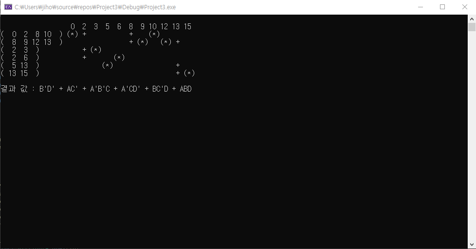

Quine-McCluskey 구현

콰인-매클러스키 알고리즘(Quine-McCluskey algorithm)은 논리식을 최소화하는 알고리즘으로 카노 맵과 비슷한 논리식을 최소화하는
알고리즘입니다. 순차, 선택, 반복을 숙달하는 한편 여러 알고리즘의 응용해보는 프로젝트로 C언어를 이용하여 구현하였습니다. 결과 값과 함께 화살표를 이용하여
각 단계별 풀이과정을 참고할 수 있도록 제작하였습니다.
주요기능
Quine-McCluskey의 기능 수행 및 알고리즘 실행간 풀이과정 제공
Language
C++
Environment
Visual Studio 2019